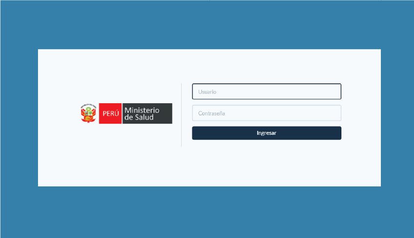

Manual de Uso
Cosulta Externa
Manual de Uso
Cosulta Externa
Presentación
La utilización de la tecnología de la información y comunicación como instrumento te acerca a los servicios de salud es un proyecto desarrollado a través de la creación de plataformas web especiales que sirven para brindar un servicio a la comunidad a través de internet, de la telemedicina, las historias clínicas electrónicas, los mensajes de textos y las redes sociales.
Es por ello que en la presente gestion se han puesto al servicio de la población una serie de herramientas tecnológicas en este caso las plataformas web con la finalidad de acercar los servicios de salud a los que más lo necesitan, como parte de la política de inclusión social. Dichos modulos son: programacion de citas a los diversos servicios medico, modulo triaje, cred e inmunizaciones y consulta externa.
INGRESO A HCECE
a. Se debe usar el navegador Google Chrome o Firefox

b. Debe escribir la url de la siguiente forma: http://hcece.minsa.gob.pe
c. Se debe escribir el usuario y contraseña (en este caso es el DNI del usuario generado por el sistema).
Nota: Por medidas de seguridad, se recomienda cambiar la contraseña, una vez ingresado al sistema)
DESCRIPCIÓN DE LA PÁGINA DE INICIO de consulta externa
En la siguiente figura, se observa el listado de pacientes citados en cada uno del consultorio externo, en este caso es de Medicina. Dichos pacientes vienen del servicio de triaje.
Nota: Es obligatorio que el paciente haya pasado por el servicio de triaje, debido que en dicho servicio se implementó el módulo de triaje.
En dicho listado consta se los siguientes datos: HCE (historia clínica electrónica), nombre y apellidos, consultorio asignado, cupo (orden de llegada), hora de inicio de consulta Para ingresar a cada Historia clínica tan solo hacer clic en botón Atender
Ingreso de información al módulo
Al ingresar al módulo se aprecia los siguientes campos.
1. En la cabecera, se encuentra los datos del paciente, en la mayoría de los casos esta la fotografía, los nombres completos, el n° DNI, sexo, edad (sison niños menores de 1 año, está calculado en meses).
2. La fecha de la consulta está determinada por defecto y la hora.
3. Detalle de la consulta: Consiste en llenar según la entrevista que realiza el medico al paciente, en la cual esta los siguientes ítems: Fiebre en los 15 días, Tos de más de 15 días, secreción o lesiones genitales, cuidados paliativos (son opciones que se puede marcar más de uno).
4. Tiempo de enfermedad: Registrar el número y marcar los parámetros de tiempo (días, semanas, meses, años).
5. Motivo de consulta: Es el relato del paciente acude a la consulta médica, pueden utilizar números y abreviaturas según onvenga.
Nota: En caso que la paciente sea mujer aparecen los siguientes campos: Fecha de ultima menstruación, régimen catamenial (tiempo regla) y la condición (marcar si es gestante o puérpera).En caso si es paciente adolescente, aparecen campos acerca del desarrollo físico del adolescente.
6. Visualización de signos vitales y datos antropométricos: En estos campos están llenados desde el servicio de triaje siendo que allí esta implementado el módulo de triaje. El cálculo del IMC y diagnóstico es de forma automática.
7. Funciones Biológicas: En el momento de la entrevista médica, si no hay ninguna alteración de dichas funciones en forma automática se marcan y no es visible. Pero si hay alguna alteración en los siguientes campos: apetito, sed sueño, orina, deposiciones y estado de sueño. En el campo de observaciones se llena según convenga el médico.
8. Si en caso, se agregó el campo examen visual, al marcar dicho campo se visualiza los campos propios del examen visual.
9. Examen regional: El medico marcara después de su examen físico del paciente, los campos que están alterados con su respectiva observación si es necesario.
10. Examen mental: Al marcar el campo, se hace visible los siguientes campos para su llenado según sea necesario.
11. Diagnósticos: Según la prioridad del médico, se llenará en el campo diagnostico como lo conoce el médico. Enseguida para hallar el código CIE10 se debe escribir el código o la palabra que aparecerá en forma automática. Marcar el tipo de diagnóstico que corresponda: Definitivo(D), Presuntivo(P) o Repetitivo(R). Si hubo algún error solo marcar el botón X y si desea agregar más diagnósticos marcar el botón Agregar
12. Para determinar el medicamento se realiza de la siguiente forma:
13. En caso que necesite otro apoyo al diagnóstico médico, se debe marcar en campo imágenes, el apoyo de imagen que necesite. En campo laboratorio, escribirá por la palabra o código cie10, el tipo de apoyo de laboratorio que requiera el paciente. Procedimientos: Es más conocido como CPT (Current Procedual Terminology), marcar el tipo procedimiento o servicio médico realizado durante la consulta. Si hubo algún error solo con marcar el icono X se elimina la fila y el botón agregar si desea agregar una fila.
14. Observaciones: El medico escribirá las recomendaciones y cuidados durante el tratamiento entre otras recomendaciones. Al terminar de llenar, clic botón Guardar.
Reportes emitidos del módulo
Al terminar de llenar y guardar los datos, se aprecia los siguientes reportes para su impresión y archivamiento en el file del paciente.
Informe de atención
Recetas para la entrega de medicinas
Generación de la referencia al hospital
Para la generación de la referencia médica para otro establecimiento de salud se debe hacer clic en botón Como generar referencia.
Aparece una ventana nueva y se llena los campos requeridos y necesario para la referencia.